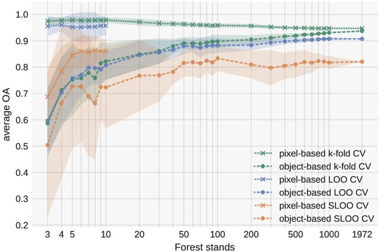

7 Week 7
7 Classification Methods 2
7.1 Summary
In this section, I am going to give an overall idea of how Machine Learning (ML) classification algorithm works, explain the basic concept of sub pixel analysis, and understand how to assess the accuracy of the models we build.
7.1.1 Remote Sensing ML Classification Methods In a Nutshell
- How to build a ML model in Remote Sensing?
The image below illustrates the general idea of how ML models are built in remote sensing. The pixel values are extracted from Region of Interest (ROI), and the data are stored in a tabular format. Each row contains the values of each pixel. The output value (land cover type) that we are trying to predict is called ‘Label’,and the input data is ‘Feature’. 70% of the values are used for training a model, the rest is withheld for testing the accuracy of the model.
Any Considerations?:
- For generalizability, better use
multi-year data, rather than data from one single year - Understanding of spatial autocorrelation
HardvsSoftclassification
- For generalizability, better use
A bit of Thought…..
So far, the classification methods we covered are at a per pixel approach, which assumes that a pixel contains only one land type. However, in reality, this is hardly true as each pixel can consist of different types of land. If we are doing a research, don’t we need to set detailed criteria or reasons to say a certain pixel a specific land type when building a model and share this with people?
7.1.2 Spectral Mixture Analysis (SMA)
Definition:
SMA is a sub-pixel analysis technique which
estimates the proportion of different land covers within a pixelbased on theirspectral signatures(Manolakis, Lockwood, and Cooley 2016).
Assumption:
The reflectance spectrum of a pixel is a linear sum of the reflectance spectra of
Endmembers(different land cover types) present within that pixel (Roberts et al. 1998).Note.
Endmembersare spectrally pure pixels which have homogeneuos land cover, and there are typically only a few of them.

Any Considerations?:
- number of Endmembers
- pixel purity
A bit of Thought…..
Can we really tell that Endmembers are representative of each land cover type? In previous lecture on signature reflectance, there was disparities in signature reflectance even between the same land cover type. For example, different tree species had different signature reflectance.
7.1.3 Accuracy Assessment
Error matrix:
Producer accuracy (Recall):- How often are a map maker’s classification of real features on the ground is correct
- \(TP\) / \(TP\) + \(FN\)
User accuracy (Precision):- How often the class on the map will actually be present on the ground
- \(TP\) / \(TP\) + \(FP\)
Overall accuracy (OA):- How well a map accurately represents all the reference sites
- \(TP\) \(+\) \(TN\) / \(TP + FP + FN + TN\)
F1:
- combines both recall and precision
- \(F1 = 2 * Precision * Recall / Precision + Recall\)
7.2 Application
All ML models need to be tested with withheld data to avoid over-fitting issues. When it comes to ML classification models in remote sensing, however, this is not enough!. There is another factor that we have to consider…
Spatial autocorrelation!!
Tobler (1970) argued the first law of geography is that near things are more closely related than distant things. Even if we split our spatial data into training and test data, there will always be “possibilities of spatial autocorrelation”.
7.2.1 Brief Information about the Research
Karasiak et al. (2021) built a random forest (RF) model to classify forest stands. The research team compared the OA of six cross-validation (CV) strategies with different sample sizes - pixel and object levels.
7.2.3 Main Findings of the research
Ignoring spatial autocorrelation resulted in a high accuracy in both sample levels
Non-spatial LOO or k - fold CV at the object level can mitigate the effect of spatial autocorrelation, when the number of sample size is not too large (50 forest stands)
- If the number of sample increases (over 500 forest stands), the distance between forest stands reduces, leading to increased effect of spatial dependence between training and test datasets
Spatial LOO CV is a better choice


A bit of Thought…..
Before reading this paper, I thought that object-based analysis is a safe way to avoid spatial autocorrelation issue as it is based on distance.
After reading the paper, however, I began to understand the object-based non-spatial CV is just an alternative of spatial CV when the sample size is not too large.
If we are classifying land cover types other than forest stands, would this optimal sample number be different from the forest stands? What is the optimal number of sample sizes that we are safe to use non-spatial CV to assess remote sensing ML model?
7.3 Reflection
This week’s contents helped me understand the particular characteristics of remote sensing ML models. As ML models are grounded on spatial data, spatial autocorrelation is always inherent in the data we use.
Building a ML model without understanding this distinctive feature would result in a misleading classification.
Moreover, I was pleased to see what we learnt in the previous term (Moran’s I) comes into play in solving spatial autocorrelation in ML models. This reinforced my understanding of previous lessons as well as connected it to new concepts and methodologies.
In closing this week’s diary, I would like to look into any other new ML models in remote sensing which are not covered in the lecture, and their usage in urban environments.